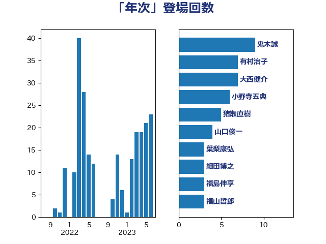

単語「年次」

| 鬼木誠 | 立憲民主党 | 9 回 |
| 有村治子 | 自由民主党 | 7 回 |
| 大西健介 | 立憲民主党 | 7 回 |
| 小野寺五典 | 自由民主党 | 6 回 |
| 猪瀬直樹 | 日本維新の会 | 5 回 |
| 山口俊一 | 自由民主党 | 4 回 |
| 葉梨康弘 | 自由民主党 | 3 回 |
| 細田博之 | 自由民主党 | 3 回 |
| 福島伸享 | 無所属 | 3 回 |
| 福山哲郎 | 立憲民主党 | 3 回 |
| 杉尾秀哉 | 立憲民主党 | 3 回 |
| 末松信介 | 自由民主党 | 3 回 |
| 斉藤鉄夫 | 公明党 | 3 回 |
| 伊藤岳 | 日本共産党 | 3 回 |
| 齋藤健 | 自由民主党 | 2 回 |
| 高木かおり | 日本維新の会 | 2 回 |
| 長浜博行 | 無所属 | 2 回 |
| 神谷裕 | 立憲民主党 | 2 回 |
| 田村智子 | 日本共産党 | 2 回 |
| 柴田巧 | 日本維新の会 | 2 回 |
| 掘井健智 | 日本維新の会 | 2 回 |
| 徳永エリ | 立憲民主党 | 2 回 |
| 平木大作 | 公明党 | 2 回 |
| 川田龍平 | 立憲民主党 | 2 回 |
| 岸田文雄 | 自由民主党 | 2 回 |
| 宮本岳志 | 日本共産党 | 2 回 |
| 安江伸夫 | 公明党 | 2 回 |
| 塩川鉄也 | 日本共産党 | 2 回 |
| 古川禎久 | 自由民主党 | 2 回 |
| 加藤勝信 | 自由民主党 | 2 回 |
| 三木圭恵 | 日本維新の会 | 2 回 |
| 高橋千鶴子 | 日本共産党 | 1 回 |
| 高市早苗 | 自由民主党 | 1 回 |
| 馬場雄基 | 立憲民主党 | 1 回 |
| 阿部知子 | 立憲民主党 | 1 回 |
| 阿部司 | 日本維新の会 | 1 回 |
| 野田聖子 | 自由民主党 | 1 回 |
| 進藤金日子 | 自由民主党 | 1 回 |
| 辻元清美 | 立憲民主党 | 1 回 |
| 赤池誠章 | 自由民主党 | 1 回 |
| 西村康稔 | 自由民主党 | 1 回 |
| 芳賀道也 | 国民民主党 | 1 回 |
| 美延映夫 | 日本維新の会 | 1 回 |
| 紙智子 | 日本共産党 | 1 回 |
| 笠井亮 | 日本共産党 | 1 回 |
| 竹内真二 | 公明党 | 1 回 |
| 稲津久 | 公明党 | 1 回 |
| 福重隆浩 | 公明党 | 1 回 |
| 福田昭夫 | 立憲民主党 | 1 回 |
| 福岡資麿 | 自由民主党 | 1 回 |
| 石田昌宏 | 自由民主党 | 1 回 |
| 石井準一 | 自由民主党 | 1 回 |
| 田村まみ | 国民民主党 | 1 回 |
| 田嶋要 | 立憲民主党 | 1 回 |
| 牧島かれん | 自由民主党 | 1 回 |
| 浜田靖一 | 自由民主党 | 1 回 |
| 浅野哲 | 国民民主党 | 1 回 |
| 津島淳 | 自由民主党 | 1 回 |
| 泉健太 | 立憲民主党 | 1 回 |
| 沢田良 | 日本維新の会 | 1 回 |
| 森本真治 | 立憲民主党 | 1 回 |
| 枝野幸男 | 立憲民主党 | 1 回 |
| 林芳正 | 自由民主党 | 1 回 |
| 松本剛明 | 自由民主党 | 1 回 |
| 杉久武 | 公明党 | 1 回 |
| 木原稔 | 自由民主党 | 1 回 |
| 星北斗 | 自由民主党 | 1 回 |
| 新垣邦男 | 立憲民主党 | 1 回 |
| 川合孝典 | 国民民主党 | 1 回 |
| 岩谷良平 | 日本維新の会 | 1 回 |
| 小沢雅仁 | 立憲民主党 | 1 回 |
| 小池晃 | 日本共産党 | 1 回 |
| 小川淳也 | 立憲民主党 | 1 回 |
| 小倉將信 | 自由民主党 | 1 回 |
| 宮崎勝 | 公明党 | 1 回 |
| 大家敏志 | 自由民主党 | 1 回 |
| 堤かなめ | 立憲民主党 | 1 回 |
| 國場幸之助 | 自由民主党 | 1 回 |
| 和田義明 | 自由民主党 | 1 回 |
| 吉田はるみ | 立憲民主党 | 1 回 |
| 勝部賢志 | 立憲民主党 | 1 回 |
| 加田裕之 | 自由民主党 | 1 回 |
| 倉林明子 | 日本共産党 | 1 回 |
| 佐藤啓 | 自由民主党 | 1 回 |
| 伊藤俊輔 | 立憲民主党 | 1 回 |
| 仁木博文 | 無所属 | 1 回 |
| 上田清司 | 国民民主党 | 1 回 |
| 上杉謙太郎 | 自由民主党 | 1 回 |
| 上川陽子 | 自由民主党 | 1 回 |
| 三谷英弘 | 自由民主党 | 1 回 |